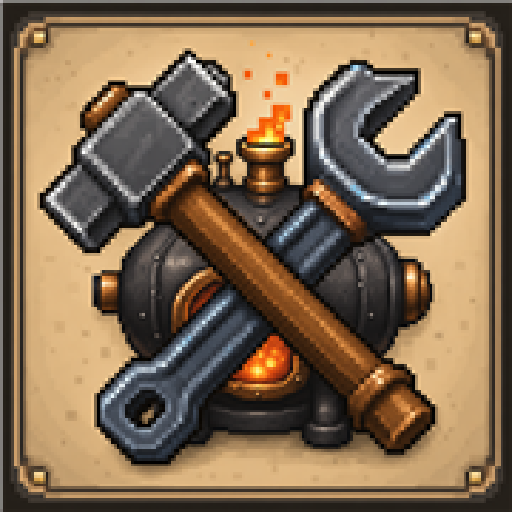

Click Foundry release notes
r1.1.3 Machine Processing Fixes
Gameplay-facing changes for the public build. Share the PDF version as click-foundry-r1.1.3-patch-notes.pdf.
Patch Notes
- LV Battery Buffers now show live input and output draw so power bottlenecks are easier to diagnose.
- Fluid-capable machines now allow fluids to be withdrawn from input slots with compatible portable containers.
- LV Air Collectors now route Air through standard fluid pipes and directly into adjacent Centrifuges; Air collection and separation run as deliberate completed batches with corrected timings and yields.
- LV Centrifuges now provide separate item and fluid or gas inputs with a phone-safe terminal layout.
- Machine terminal load bars now remain visible on supported phone sizes without requiring page scrolling.
- LV Assembler recipes now expose one real output, keep completed machine parts in the output slot until collected, and no longer display or grant placeholder outputs while crafting.